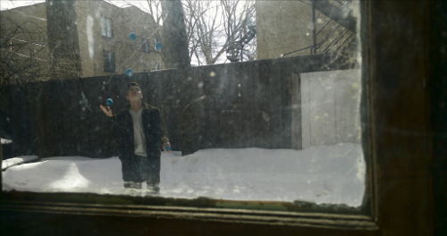
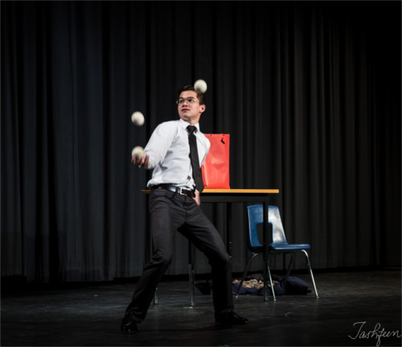

{kind=link}
{kind=link}
{kind=link}


Print (3.2MB)
Web (824kB)

Web (252kB)
Print (5.6MB)
Web (813kB)
Comrade: Kevin is a juggler and dancer. He teaches and performs at juggling festivals and local events, as well as organizes events in the circus scene in Montreal. He likes to experiment with combining dance with object manipulation, and is exploring new props and aesthetics in juggling. Outside of performance art, his main projects are in teaching biotechnology and using it to improve how we make medicine. His inspirations include: Stefan Sing, Neta Oren, Jacob Sharpe, Svetalana Zueva, Yuri Yamamura, Komei Aoki, Kotaro, Guillaume Martinet, Éric Longequel, Water on Mars, The Gandinis, The McQuiggs, and many others.
From Greg: This year’s winner of the X-Juggling 3-ball extreme competition, Kevin is truly a ball juggler’s ball juggler. When not throwing things he keeps busy making deals, designing molecules, and doing science education as part of a cutting-edge synthetic biology startup in Montréal. A former president of the Queen’s Jugglers, he’s happy to be back on his home turf and sharing his love of spheres with you.
Art: Kevin is a juggler and dancer, working on combining movement with all kinds of object manipulation. He has performed at local events and juggling festivals. And he organizes events in the circus scene in Montreal.
Science: Kevin is a biochemist and biohacker. He is a co-founder of Montreal’s DIYbio community, Bricobio. When he’s not working on the hacker/maker scene, he is working as the CEO and Co-founder of Hyasynth Bio, a biotech startup that is producing cannabinoids using genetically engineered yeast.
{kind=link}
{kind=link}